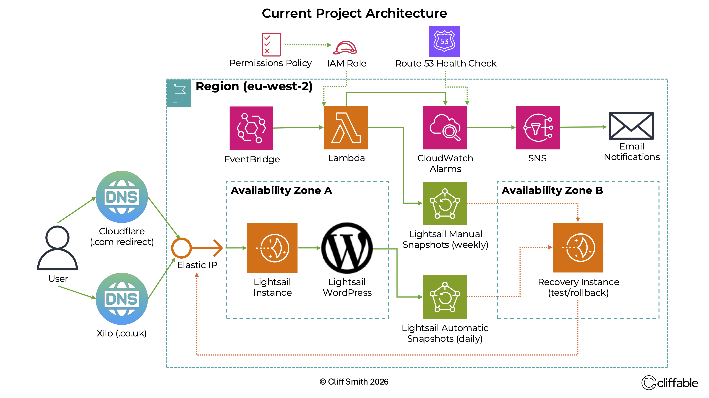

Published 29 May 2026
The Night Monitoring Paid For Itself
Only a few days after implementing monitoring and alerting for a production WordPress site, the system detected a genuine outage. What started as a website-down alert eventually led to the discovery of an out-of-memory event, forgotten migration settings and a lingering plugin reference left behind after migration.

CPU utilisation alarm received shortly before the outage, providing the first indication that the instance was under stress.
The first real test
Shortly after implementing Route 53 health checks, CloudWatch alarms and SNS email notifications, a health check alarm triggered unexpectedly.
At the time, the site appeared healthy. Apache was running, MariaDB was running, system load was low and memory usage looked normal. The evidence suggested a transient health check failure and no immediate action was required.
A few days later, the monitoring system received its first real test.
Multiple alarms triggered:
- Route 53 Health Check Status = 0
- CloudWatch website-down alarm
- CPU utilisation above threshold
- Status check failure alarm
Unlike the earlier false alarm, this time multiple independent signals were reporting the same problem.
This time the website was genuinely unavailable.
When the site disappeared
The outage occurred overnight. The website was unreachable externally and even browser-based SSH access failed with an upstream error.
By the time investigation began, the instance had been manually rebooted and appeared healthy again. Apache was running, MariaDB was running, CPU usage was low and available memory looked normal.
At first glance there was no obvious explanation for the outage.
That shifted the investigation away from the current system state and towards historical logs.
{kind=link}

Production WordPress architecture with monitoring, alerting and recovery systems deployed on AWS.
Finding the root cause
System logs eventually revealed the sequence of events.
Apache had triggered the Linux out-of-memory killer. Shortly afterwards, MariaDB was terminated by the kernel due to memory exhaustion.
Without a database, WordPress could no longer serve pages and the website became unavailable. The monitoring system detected the failure and generated the alerts.
A migration setting left behind
Further investigation uncovered an important detail.
During the migration from the Bitnami WordPress blueprint to the official AWS Lightsail WordPress blueprint, PHP limits had been temporarily increased to support a large All-in-One WP Migration restore.
Those settings were never returned to production values afterwards.
Most notably, the PHP memory limit had been left at 2048 MB on a Lightsail instance with only 1 GB of RAM.
Production values were restored and Apache was restarted.
- memory_limit = 256M
- post_max_size = 128M
- upload_max_filesize = 128M
- max_execution_time = 300
One more surprise
While investigating the outage, I also reviewed the active WordPress plugins.
The plugin list appeared normal until I discovered an orphaned ManageWP worker reference still present in the WordPress active_plugins configuration.
The plugin itself no longer existed, but WordPress still retained the reference from a previous hosting environment.
The stale entry was removed as part of the cleanup process.
Conclusion
The most valuable lesson from this incident was that monitoring does more than report outages.
Monitoring provided the visibility needed to identify what happened, narrow the scope of the investigation and ultimately find the root cause.
Without the health checks, alarms and notifications, the outage might have gone unnoticed for much longer and the investigation would have started with far less information.
Only a few days after deployment, the monitoring system had already proven its value by helping identify and resolve a real production incident.
Related project
This work was implemented as part of the WordPress on AWS Lightsail project.